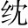
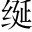

夏四月，取郜告。大鼎於宋。納於大泰。廟宋華督弒殤公，恐諸侯討己，故以郜國所造之鼎賂魯。桓公至是取所賂之鼎於宋，納於大廟。○曰「取」、曰「納」，書法凜然。，非禮也受弒逆者之賂器，以汙宗廟，非禮之甚也。○斷一句。。
臧哀伯魯大夫，僖伯之子。諫曰：「君人者，將昭德塞違，以臨照百官，猶懼或失之，故昭令德以示子孫言人君者，將昭明善德，閉塞邪違，以顯示百官，如日月之臨照焉，猶恐不能世守而弗失，故復以其德之最善者昭著於物，以垂示子孫。○「昭德」、「塞違」並提，是一篇主意，然「昭德」正所以「塞違」也，故下歷言「昭德」之實。。是以清廟茅屋清廟，肅然清淨之廟也。茅屋，以茅飾屋也。，大路越活。席大路，祀天車，樸素無飾。越席，結草為席也。，大泰。羹不致大羹，大古之羹，肉汁也。不致，謂無鹽梅之和也。，粢食嗣。不鑿作。○黍稷曰粢。鑿，精米也，一石舂為八斗。，昭其儉也儉約不敢奢侈。○「昭令德以示子孫」者一。。袞、冕、黻、珽挺。○袞，畫衣。冕，冠也。黻，蔽膝也。珽，玉笏也。，帶、裳、幅璧。、舄昔。○帶，革帶。裳，下衣。幅，今之行縢，即裹腳也。舄，復履也。，衡、耽上聲。、紘宏。、延。○衡，維持冠者。，昭其度也，冠之垂者。。藻、率，纓從下而上者。、鞞，冠上覆者。、鞛尊卑各有制度。○「昭令德以示子孫」者二。，鞶律。、厲、遊丙。、纓卜上聲。○藻、率，以韋為之，所以借玉也。佩刀之鞘，上飾曰鞞，下飾曰鞛。，昭其數也盤。。火、龍、黼、黻留。，昭其文也鞶，大帶。厲，大帶之垂者。遊，旌之末垂者。纓，馬飾。。五色比象尊卑各有等數。○「昭令德以示子孫」者三。，昭其物也火，畫火也。龍，畫龍也。黑與白謂之黼，黑與青謂之黻。龍，畫於衣。火、黼、黻，繡於裳。。鍚上下各有文章。○「昭令德以示子孫」者四。、鸞、和、鈴車服器械之有五色，皆以比象天地四方。，昭其聲也大小各有物色。○「昭令德以示子孫」者五。。三辰旂旗揚。，昭其明也四者皆鈴類，鍚在馬額，鸞在鑣，和在衡，鈴在旂。。夫德，儉而有度，登降有數，文、物以紀之，聲、明以發之，以臨照百官。百官於是乎戒懼，而不敢易紀律四者齊聲，自然節奏。○「昭令德以示子孫」者六。。今滅德立違三辰，日月星也，畫於旂旗。交龍為旂，熊虎為旗。，而寘旌旗燦爛，象天之明。○「昭令德以示子孫」者七。其賂器於大廟登降，謂有損益。紀，維也。發，揚也。紀律，紀綱、法律也。○總「昭德」作一收。戒懼，而不敢易紀律，即所以「塞違」也。，以明示百官。百官象之，其又何誅焉今受賂立督，是不昭德而滅德，不塞違而立違。？國家之敗，由官邪也同「置」。。官之失德，寵賂章也寘，猶納也。。郜鼎在廟，章孰甚焉象，效尤也。誅，責也。○不可納者一。？武王克商遷九鼎於雒由百官之違邪。邑謂寵臣之受賄賂，章明而無所忌憚也。，義士猶或非之大廟，百官助祭之所。章明昭著，莫過於此。○不可納者二。，而況將昭違亂之賂器於大廟，其若之何同洛。? 」公不聽九鼎，夏禹所鑄，三代相傳，以為有國之寶。武王克商，遷九鼎於成周之雒邑。。
周內史大夫官。聞之，曰：「臧孫達即哀伯。其有後於魯乎僖伯諫隱觀魚，其子哀伯諫桓納鼎，積善之家，必有餘慶，故曰「有後於魯」。！君違，不忘諫之以德桓公雖滅德立違，哀伯惓惓不忘諫之以昭德。○「昭德塞違」總結。。」
劈頭將「昭德塞違」四字提綱，而「塞違」全在「昭德」處見，故中間節節將「昭」字分疏，見廟堂中何一非令德所在，則大廟容不得違亂賂鼎可知，後復將「塞違」意分作三樣寫法，以冀君之一寤而出鼎，故曰「不忘」。